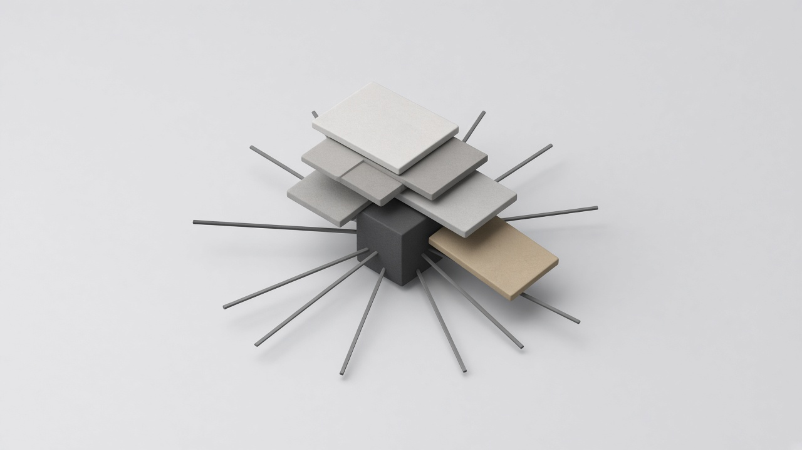
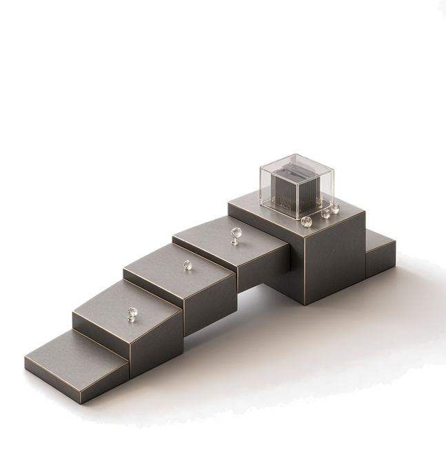
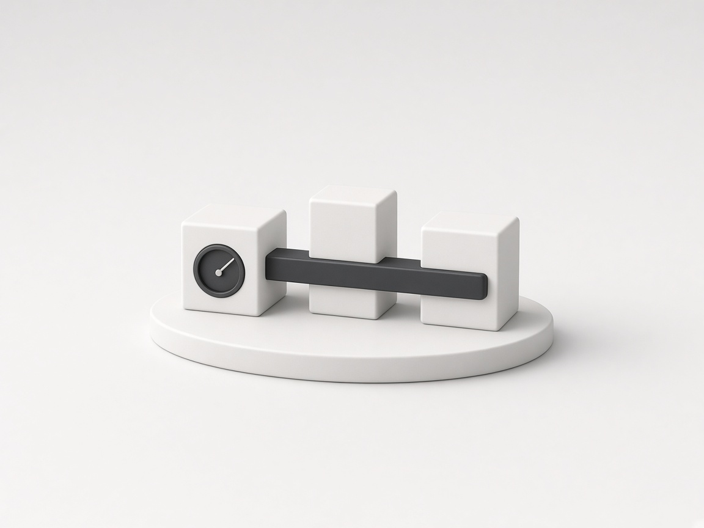
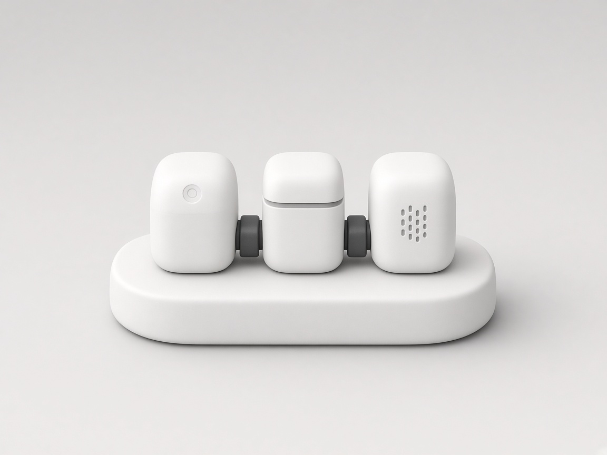
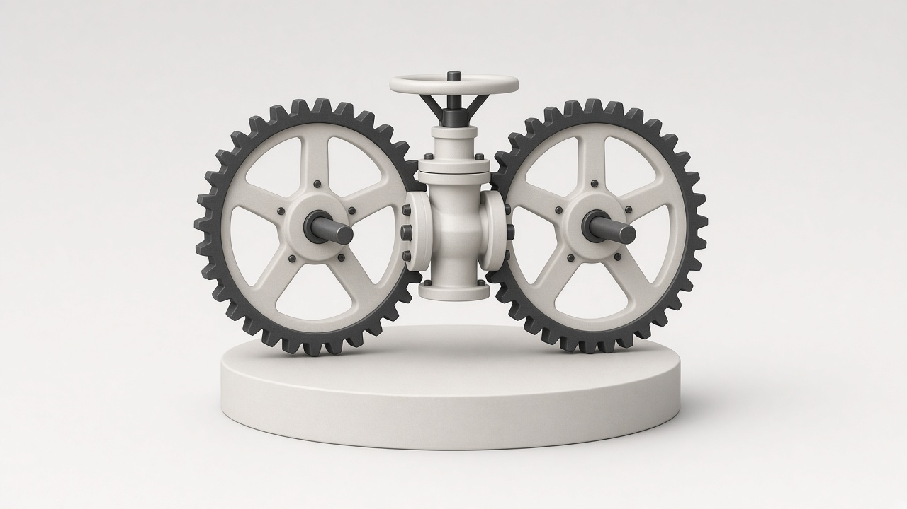

Internal Team Overloaded
Your current developers are stretched thin, forcing you to compromise on feature delivery speed or code quality.
We help North American startups, SaaS companies, and growing enterprises clear technical backlogs, build scalable web & mobile applications, and master complex Salesforce ecosystems—backed by 6+ years and 100+ delivered projects.
Trusted by growing businesses, SaaS builders, and enterprise teams across the USA and Canada.
Main Street America, University Hospitals, Tennessee Oncology, Accutive Security, Barksdale, 108 ideaspace, National Anti-Hacking Group, ntech, SAAS INCT, CyberPeace Foundation, BrickRed Systems, Care-One, AYNTech Solutions
(Friction Points We Solve)
We don't just take orders and write code. We bring technical ownership, senior engineering capacity, and structured execution into your workflow — helping you build systems that are stable, scalable, and built for the long term.

We don't just take orders and write code; we architect solutions, challenge assumptions, and ensure long-term system stability.
Bypass months of recruitment. Plug senior engineering capacity directly into your workflow within days.
Our workflows integrate directly with your existing tools, Jira boards, Slack channels, and development pipelines.
From frontend UI/UX and robust backend APIs to enterprise Salesforce integrations and ongoing maintenance.
Capabilities
Market stability
A proven, stable engineering partner with an established history of successful project delivery.
Track record
Extensive hands-on experience across multiple industries, architectures, and technical stacks.
Salesforce
Deep capabilities spanning custom Apex, Lightning Web Components, CPQ, and complex REST/SOAP integrations.
USA & Canada
Direct, frictionless collaboration with clients across the USA and Canada.
Full lifecycle
From initial architecture and UI/UX design to robust development, QA testing, and post-launch maintenance.
Your systems
We step into your existing codebase, untangle technical debt, and build forward.
Engagement
Choose fixed-scope projects, dedicated engineering capacity, or ongoing maintenance support based on your exact needs.
(A Process You Can Trust)

Fixed Scope & Timeline
Best for clearly defined products, specific feature builds, or defined migration scopes with fixed timelines and deliverables.

Scalable Bandwidth
Best for companies with ongoing development backlogs needing reliable, scalable senior engineering bandwidth on a monthly retainer.
Continuous Care
Best for businesses that already have live software and need dependable technical oversight, bug fixing, and performance updates.

03Growing Businesses
Modernizing legacy applications and automating internal workflows.
Yes. Our engineers integrate seamlessly into your current workflows, communication tools (Slack, Teams), and version control systems (Git/GitHub) to act as a natural extension of your team.
Absolutely. We specialize in auditing, refactoring, and maintaining existing codebases, even if documentation is sparse or legacy issues are present.
Yes. The majority of our clients are based in the USA and Canada, and our operational hours and communication channels are structured for smooth cross-border collaboration.
Yes. We offer dedicated maintenance and support agreements to ensure your applications remain secure, updated, and performant over the long term.
Yes. With 9+ years of senior Salesforce experience, we handle custom Apex, LWC, CPQ, REST/SOAP APIs, and external system integrations.
Pricing depends on the engagement model. For defined scopes, we offer clear fixed-project pricing. For ongoing capacity or maintenance, we utilize flexible monthly retainer models.
Yes. Many clients start with a focused code audit, a single feature build, or a pilot sprint before scaling into larger engagements.
Following our initial conversation, we provide a clear scoping summary, proposed technical approach, estimated timeline, and transparent commercial proposal within 48 hours.
Yes. We frequently partner with digital and software agencies in North America to provide reliable, behind-the-scenes engineering capacity under strict confidentiality.
Let’s discuss what you’re trying to build and how our engineering team can help.
30 minutes · No obligation · Practical conversation